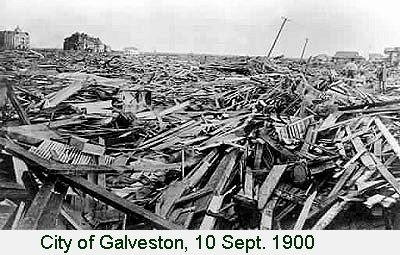

For ancestry enthusiasts, the paternal name can be traced by unbroken male descent (in German law mothers don't count) to the city of Stavenhagen in the state of Mecklenburg, Germany. The first citizen so surnamed in the archives appears at 1518, a tradesman Nikolaus, who got thrown out of town for starting an uprising. Ah, yes.
A storm (we didn't yet call them hurricanes) washed one of Lee's grandfathers (born 1844 in Charlottenburg) onto Galveston beach in 1860 to found our branch of the island clan. Grandpa and Lee's father rode out the historic September 1900 storm (and you think Katrina and Ike were bad) high on one of the city's few surviving masonry buildings. Cindy, born in Oklahoma, has anatomy proving that some of her pilgrim fathers walked to the Americas, dating her pedigree in the New World to at least twenty times older than Lee's. The Stavenhagen family crypt in the Marienkirche at Anklam was razed in 1936 to make space for a new furnace.
Now note this: Online publishing keeps the text free for everybody, and alive. I fix mistakes, commit new ones, revise, expatiate, always trying to get it less wrong. So your copies (by scholarly fair use, of course) need updating too.
{kind=link}